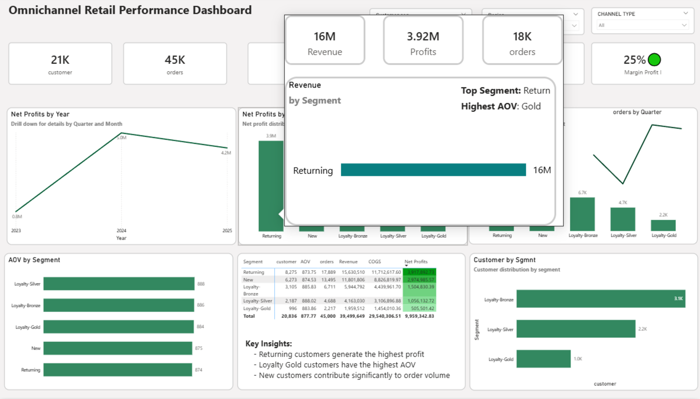
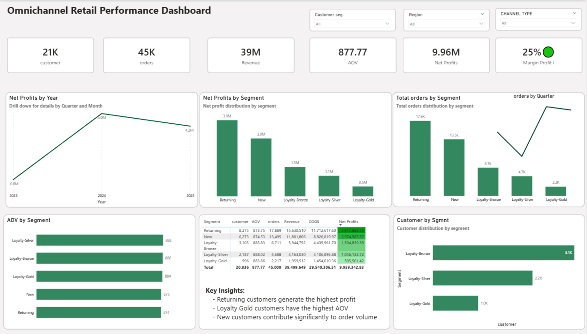
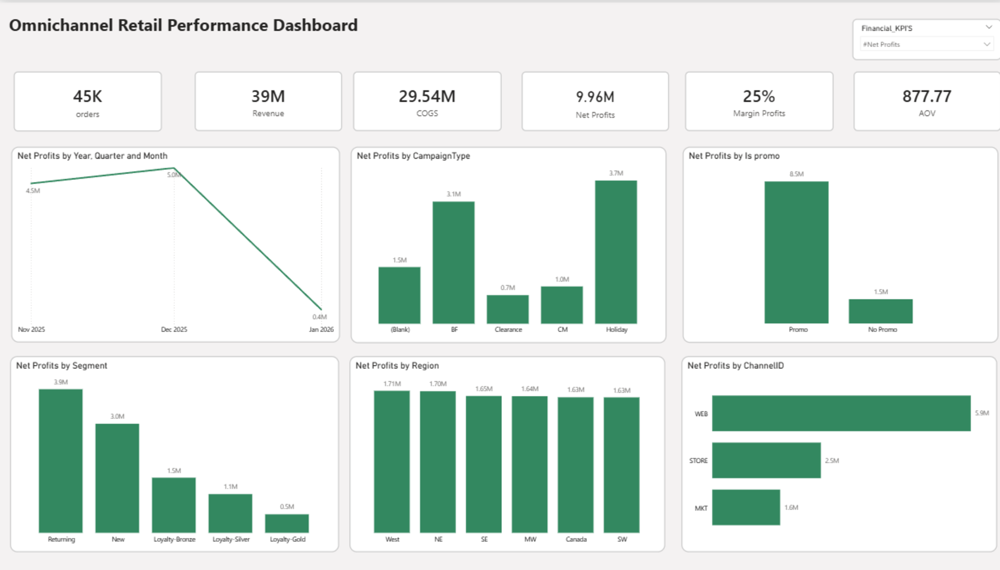
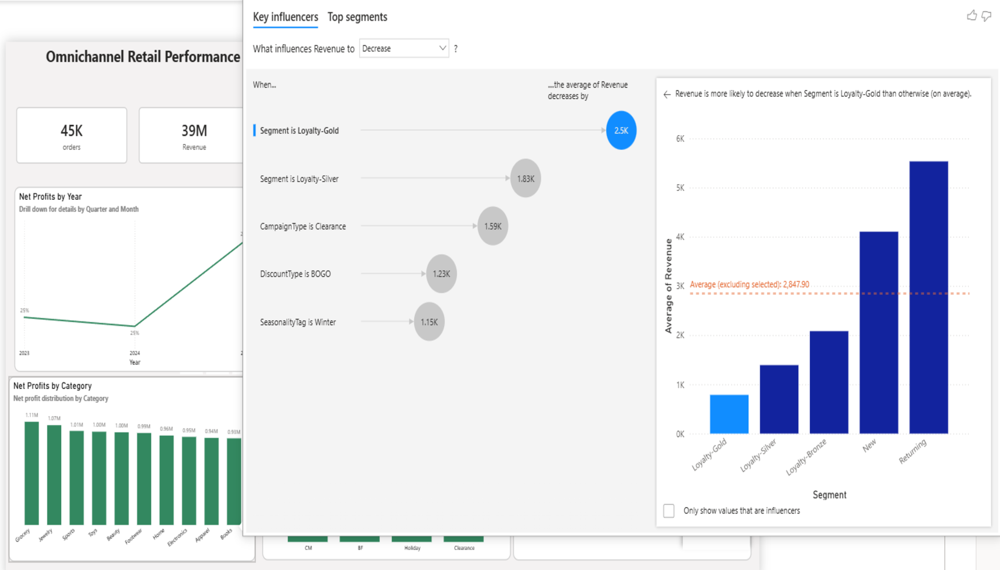
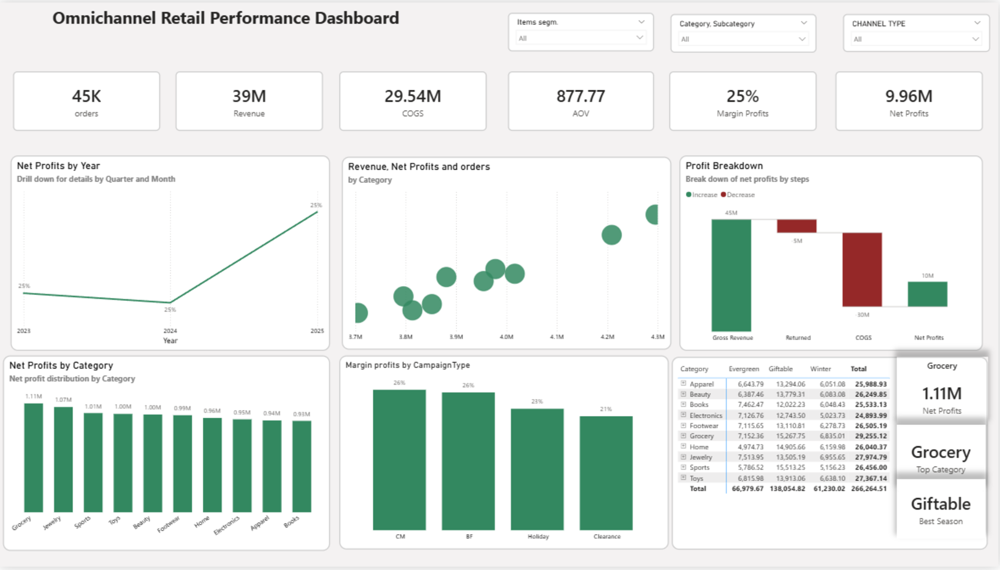
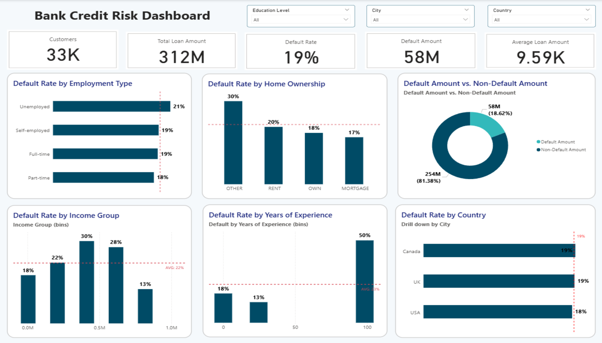
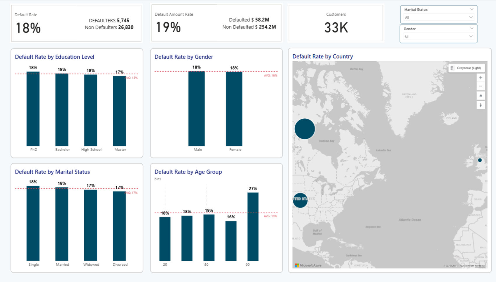
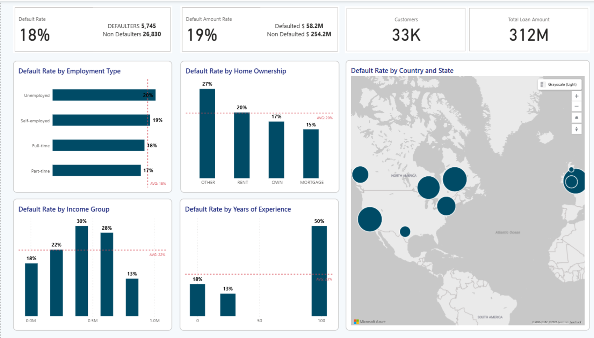
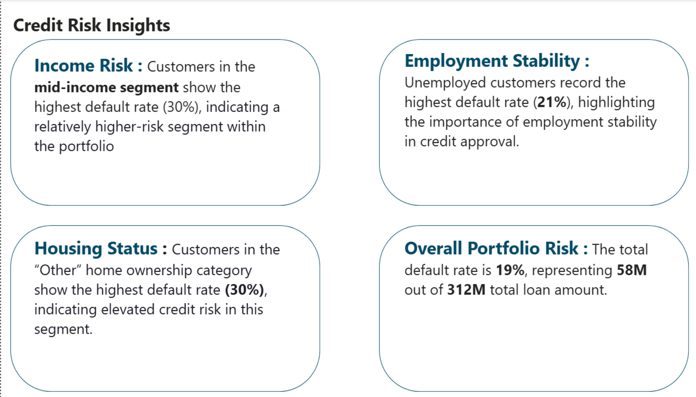

Delivering data-driven insights through advanced analytics and interactive business intelligence solutions.
Download CVData Analyst specialized in business intelligence and performance analytics. Experienced in transforming complex datasets into structured, actionable insights through interactive dashboards and advanced data modeling techniques.
Project Overview:
This project focuses on analyzing credit risk within a bank loan portfolio using Power BI.
The objective was to assess default patterns across customer demographics, employment stability,
income segments, and loan exposure in order to support strategic credit risk management decisions.
The analysis transforms raw loan and customer data into structured, risk-focused insights
to enhance portfolio monitoring and minimize financial exposure.
Dashboard Structure:
Key Analytical Features:
Technical Implementation:
Key Risk Insights:
Business Impact:
This project demonstrates strong analytical capabilities in financial risk assessment, data modeling, and business intelligence reporting, combining technical expertise with strategic credit risk evaluation to deliver measurable business value.





This project analyzes bank loan portfolio risk using advanced Power BI modeling to evaluate default patterns, customer segmentation, and credit exposure. The objective was to identify high-risk segments and support data-driven credit policy decisions.
Portfolio Overview:
Risk Segmentation Analysis:
Technical Implementation:
Business Impact:




Email: tarekelariny123@gmail.com